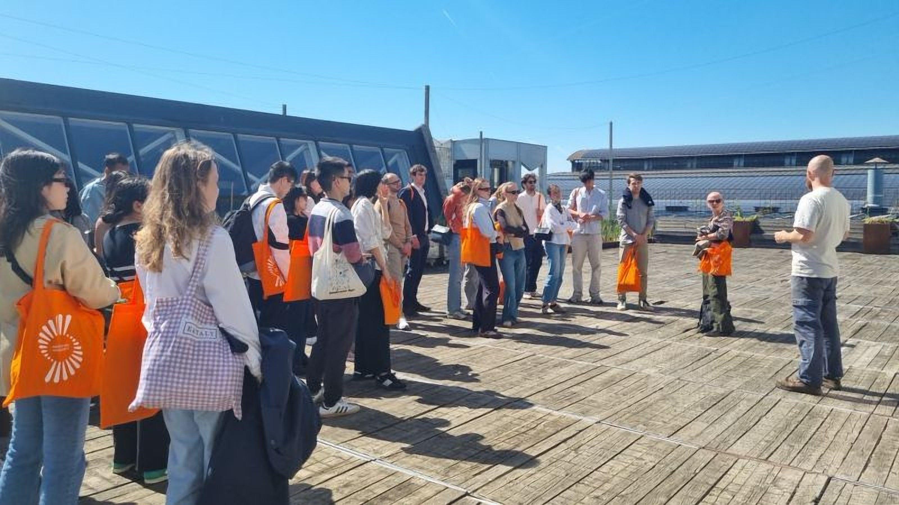
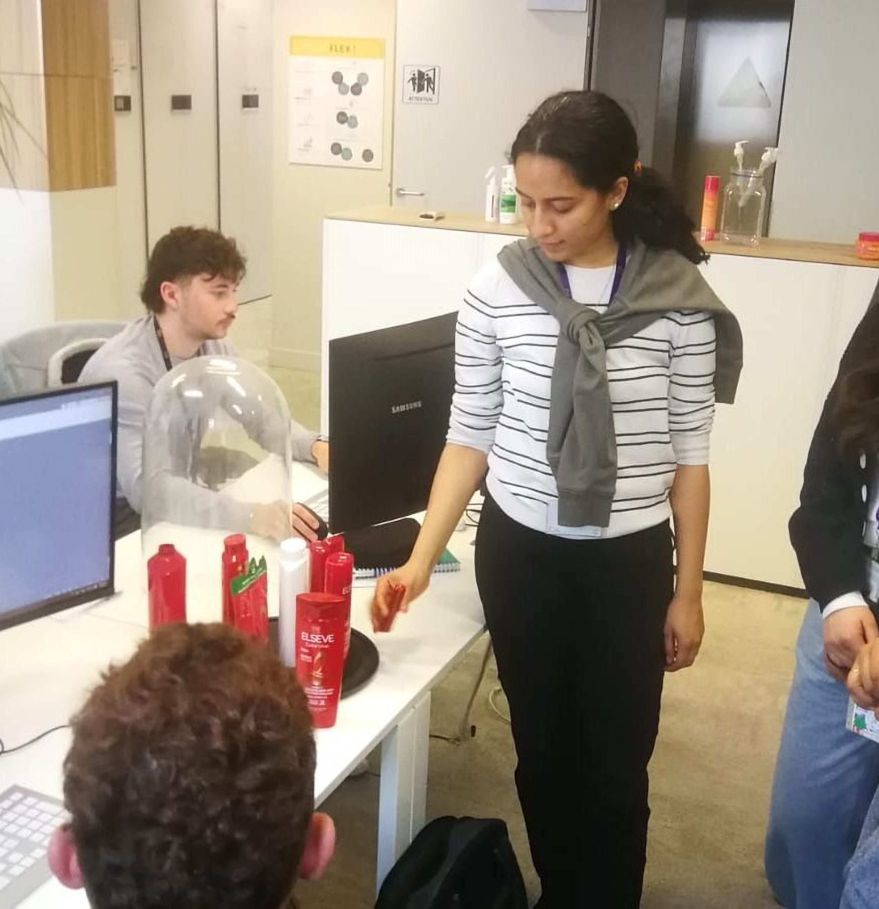
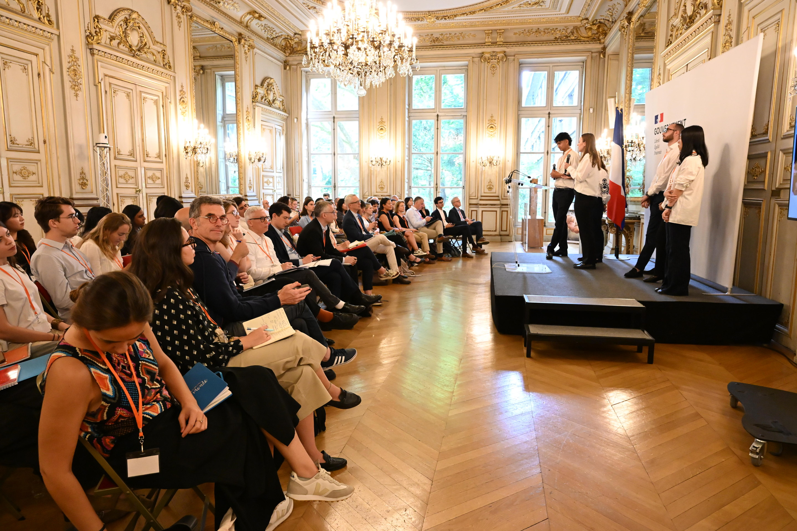
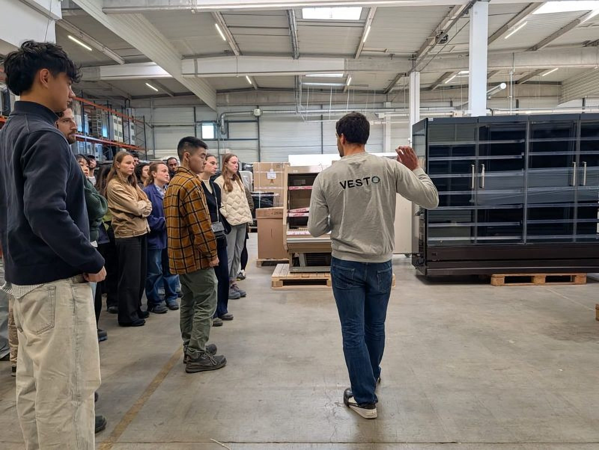

April–May 2026
Brussels expedition
European Commission, Permafungi, CBE-JU, BC Materials, ecobuild.brussels, Syensqo and BIGH: from EU circular policy to rooftop farming and advanced materials.
Read the expedition →
ESSEC Business School
The ESSEC Global Circular Economy Chair trains future Chief Circular Officers: through academic courses, applied projects with industry, and an open ecosystem of corporates, startups and public institutions.
The circular economy is one of the most powerful approaches to reconcile economic growth with sustainable development. As resources become increasingly constrained and consumption patterns evolve towards more responsible models, circular approaches offer long-term solutions that create both environmental and economic value.
The ESSEC Global Circular Economy Chair aims to train the next generation of circular economy leaders capable of driving transformation across industries and organizations.
Through academic courses, applied projects, and close collaboration with industry partners including L’Oréal, SNCF Réseau and Equans, students gain hands-on experience of real-world circular challenges and opportunities.
Beyond education, the Chair develops academic research and fosters an open, global ecosystem bringing together corporates, startups, think tanks, researchers and public institutions.
The future is circular, let us build it together.

Strengthening Your Business Through Circular Economy Principles: a 25-hour in-person executive program developed by the TOGETHER Institute and the ESSEC Global Circular Economy Chair, in partnership with Circulab.
Designed for business leaders, managers and decision-makers, the program helps participants assess business dependencies and risks, explore circular opportunities, and build a practical action plan tailored to their organization.
Available in inter-company and customized in-company formats. First sessions expected in Fall 2026.
Beyond solid theoretical and methodological foundations, the program embodies the circular transition: live projects with partners, site visits, meetings with practitioners, and an annual learning expedition.

European Commission, Permafungi, CBE-JU, BC Materials, ecobuild.brussels, Syensqo and BIGH: from EU circular policy to rooftop farming and advanced materials.
Read the expedition →
Thirty students from twelve nationalities presented six consulting projects with L’Oréal, SNCF Réseau, Equans and AP-HP at the Hôtel de Roquelaure, hosted by Minister Mathieu Lefèvre.
See events →
Circularity on the ground at L’Oréal, the Manutan Hub, Vesto and Villette Makerz, plus partner site work during the consulting projects, including Equans.
Explore visits →Each year the Chair welcomes about 30 students from eligible ESSEC programs. Selection is organised with the Chair team (not through a public form on this page). Write to the team if you want to be considered or notified.
Currently eligible:
Contact
Typical timeline: expressions of interest in September, interviews in October, results mid-October. The Chair team will point you to the right ESSEC process when it opens.
Alumni move into roles that turn circular thinking into operations, strategy and impact: Chief Circular Officers, CSR and sustainability consulting, circular supply chains, and entrepreneurial projects in reuse, repair and new business models.
Lead circular transformation inside industry: packaging, operations, procurement and product-service models.
Join firms that advise corporates and public actors on climate, ESG and circular economy roadmaps.
Build or scale circular ventures (reuse, remanufacturing, materials) or join public and ecosystem organisations.
Portraits and LinkedIn of recent classes. Photos and profiles of the latest cohort will be published as soon as they are available.